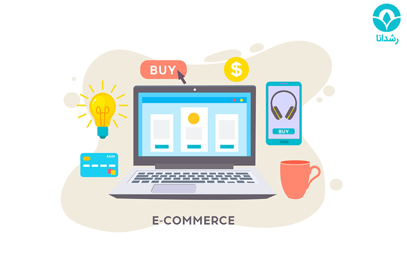

تجارت الکترونیک
تجارت الکترونیک چیست؟
تجارت الکترونیک به فرآیند خرید، فروش، یا تبادل کالا و خدمات از طریق اینترنت گفته میشود.
این مفهوم شامل فروشگاههای آنلاین (مثل دیجیکالا، آمازون)، پرداخت الکترونیک، بازاریابی دیجیتال،
مدیریت زنجیره تأمین و حتی خدمات پس از فروش در فضای مجازی میشود
امروزه تجارت الکترونیک نهتنها یک گزینه، بلکه یک ضرورت استراتژیک برای بقا و رشد کسبوکارهاست
مزایای تجارت الکترونیک چیست؟
تجارت الکترونیک به کسبوکارها این امکان را میدهد که بدون محدودیت زمان و مکان، به مشتریان بیشتری دسترسی پیدا کنند.
هزینههای راهاندازی و نگهداری آن نسبت به فروشگاههای سنتی بسیار کمتر است و مدیریت آن سادهتر است.
با ابزارهای تحلیلی، میتوان رفتار مشتریان را درک کرد و فروش را هوشمندانه افزایش داد.
مشتریان هم از تجربهای شخصیسازیشده، مقایسهی آسان قیمتها و خرید ۲۴ ساعته بهره میبرند.
بهروزرسانی محصولات، قیمتها و تبلیغات در لحظه و بدون هزینهی اضافی انجام میشود.
معایب تجارت الکترونیک چیست؟
تجارت الکترونیک علی رغم مزایای زیاد، چالشهایی هم دارد.
مشتری نمیتواند کالا را قبل از خرید لمس یا تست کند، که گاهی منجر به نارضایتی یا بازگشت کالا میشود.
امنیت اطلاعات و پرداختها همیشه در معرض خطر هک یا کلاهبرداری است و نیاز به سرمایهگذاری روی امنیت دارد.
رقابت شدید در فضای آنلاین، قیمتها را پایین آورده و سودآوری را برای فروشندگان کوچک سخت کرده است.
وابستگی کامل به اینترنت، سرور و سیستمهای فنی باعث میشود هر خطا، فروش را متوقف کند.
خدمات پس از فروش، تحویل بهموقع و مدیریت بازگشت کالا پیچیدهتر و گرانتر از فروشگاه فیزیکی است.
کمبود تعامل چهرهبهچهره هم میتواند ایجاد اعتماد را دشوارتر کند.
وبسایت های معروفی که تجارت الکترونیک میکنند:
Amazon
eBay
Shopify
Alibaba
دیجی کالا
اسنپ مارکت
ترب

بهترین وبسایت ایرانی که کار آن تجارت الکترونیک است(دیجی کالا)
دیجیکالا بزرگترین فروشگاه آنلاین ایران است که هم محصولات خودش و هم کالاهای فروشندگان مستقل را عرضه میکند.
سیستم هوشمند آن، با تحلیل رفتار کاربران، محصولات مرتبط را پیشنهاد میدهد و خرید را شخصیسازی میکند.
تحویل سریع با شبکهٔ «دیجیپست»، پرداخت در محل و بازگشت آسان کالا، اعتماد مشتریان را افزایش داده است.
دیجیکالا با انبارهای پیشرفته، سیستم مدیریت موجودی هوشمند و خدماتی مثل «دیجیپلاس»،
تجربهٔ خرید را فراتر از یک فروشگاه ساده کرده است.
با وجود چالشهایی مثل نوسان قیمت و محدودیتهای پرداخت، توانسته سیستمی پایدار و مقیاسپذیر بسازد.
امروز دیجیکالا فقط یک فروشگاه نیست، بلکه یک اکوسیستم دیجیتال در حوزهٔ تجارت الکترونیک ایران است.

نویسنده و طراح وبسایت : سید شایان سیدی